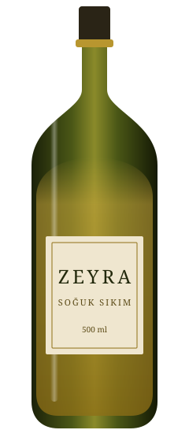

Soğuk sıkım zeytinyağı
Tek hasattan, tek şişeye.
Hasat
Zeytin tam olgunlaşmadan toplanır. Verim düşer, tat keskinleşir.

500 ml, ışık geçirmeyen koyu cam.
Etiket
Her şişede hasat yılı ve zeytinliğin adı yazar.
Ekim hasadının ilk şişeleri kasımda sofrada.